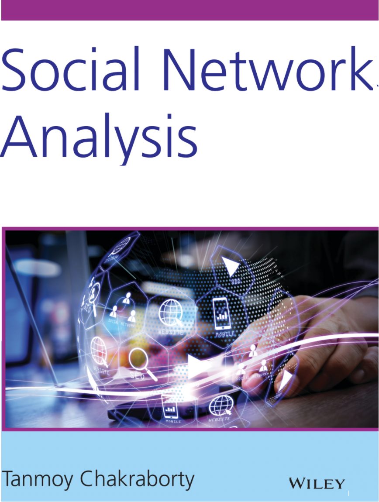

About
Awards
Publications
Students
Activities
Talks
Teaching
Media
Contact


Presentations and Invited Talks
- Invited talk at Sitare ACM Chapter, Feb 20, 2024
- Invited talk at American University in Dubai, Feb 16, 2024
- Invited speaker at the workshop on Hands-on AI Applications, R&I Park IIT Delhi, Feb 13, 2024
- Invited talk at Indian Institute of Science (IISc), Feb 2, 2024
- Invited talk at Kalyani Govt Engineering College, West Bengal, Sep 15, 2023
- Keynote talk at Second International Conference on Computing, Communication and Learning (COCOLE), NIT Warangal, Aug 3, 2023.
- Panel member of a Rountable on India's AI strategy, organised by FAST India, Aug 16, 2023
- Invited talk at ACM Kolkata Chapter, Aug 5, 2023
- Invited talk at ISI Kolkata, Aug 4, 2023
- Invited talk at Heritage Institute of Technology, Kolkata, Aug 4, 2023
- Invited talk at Naval War College, Goa, July 24, 2023
- Invited talk at TU Munich, June 14, 2023
- Invited talk at IIT Bombay, May 27, 2023
- Invited talk at IEEE KGP Section EMBS Student Branch Chapter (SBC), May 11, 2023
- Invited talk at "Data Conversations" organised by IBM Research, April 27, 2023
- Invited talk at FDP on SOCIAL MEDIA AND SOCIAL NETWORK DATA MINING, Sardar Vallabhbhai National Institute of Technology, India, Jan 4, 2023
- Invited talk for the Soft Computing Research Society (SCRS) student chapters, Delhi, Dec 28,, 2022
- Speaker at Cybersecurity in Social Media workshop, organized by IFCYBER and UNSW, Australia, Dec 15, 2022
- Invited talk at the 2nd Tech Series, IEEE Student Branch, IIT Indore, Nov 4, 2022
- Invited talk at Adobe India, New Delhi, Oct 11, 2022
- Invited talk at Artificial Intelligence Summer School (AISS), IIIT Delhi, Aug 27, 2022
- Invited talk at Bennet University, Mar 9, 2022
- Invited talk at Amity University, Mar 8, 2022
- Invited talk at iHub-Anubhuti IIITD Foundation, India, Feb 23, 2022
- Invited talk at IIT Kharagpur, India, Jan 24, 2022
- Invited talk at IIT Delhi, India, Jan 7, 2022
- Invited talk at IBM Reserch, India, Dec 15, 2021
- Invited talk at Walmart Global Tech, India, Dec 8, 2021
- Guest lecture in IIT Delhi, Oct 25, 2021
- Talk at Annual Conference for Truth and Trust Online (TTO), 2021
- Invited speaker at CheckStep, Aug 16, 2021
- Invited speaker at Department of Computer Science, University of Delhi, July 28, 2021
- Invited speaker at FDP on Semantic Intelligence: The Way Forward with Artificial Intelligence (Part II), NITK, July 25, 2021
- Keynote speaker at International Workshop on Computational Analysis of Undesired Texts on Social Media, June 25, 2021
- Invited speaker in the online Faculty Development Programme on "Recent Advances of NLP using Deep Learning", Feb 8, 2021 (Slides)
- Invited talk at LinkedIn, Mar 3, 2021
- Invited talk at Workshop on Trustworthiness of AI systems and its impact on Society in Developing Nations, Jan 21, 2021
- Invited talk at Cardiff University, Jan 20, 2021
- Invited lacture at ACM Winter School on Natural Language Processing, Jan 4-5, 2021
- Invited tutorial at ICON'20, Dec 21, 2020
- Invited tutorial at BDA'20, Dec 16, 2020
- Invited talk at IEEE SPS Delhi Chapter, Nov 20, 2020
- Invited talk at IIT Ropar, India, Oct 17, 2020
- Invited speaker in the online seminar on Leveraging NLP through Machines on Our Day to Day Life, NIT Rourkela, India, Oct 15, 2020
- Invited speaker in a faculty development program on Data Analytics: Present and Future, MMMUT, UP, Oct 14, 2020
- Invited speaker in a faculty development program on Applied Data Science, BMS College of Engg., Bangalore, July 8, 2020
- Invited webniar at Accenture, June 29, 2020
- Invited talk at South Asian University, Delhi, Feb 7, 2020
- Invited at Amazon Research Days, Bangalore, Sep 20, 2019
- Invited talk at IIIT Bangalore, July 29, 2019
- Invited talk at Wipro AI, Bangalore, July 29, 2019
- Speaker at AI-assisted Data Analytics Workshop, IIITD, July 12, 2019
- Speaker at ACM Summer School on Cybersecurity and Data Analytics, July 8, 2019
- Invited talk at the meetup at Hike on Mining Networks, Mar 30, 2019
- Invited talk at BITS Pilani, Goa Campus, Mar 18, 2019
- Invited talk at IBM IRL Delhi, Feb 4 ,2019
- Attended (upon invitation) PanIIT , IIT Delhi, Jan 19, 2019
- Attended CoDS-COMAD, Kolkata, 3-5 Jan 2019
- Tutorial at Sixth International Conference on Big Data Analytics (BDA), Dec 19, 2018
- Invited talk at Workshop on Big Data (JIIT), Dec 17, 2018
- Invited talk at Delhi University, Delhi, Dec 7, 2018
- Invited at Amazon Research Days, Bangalore, Sep 28, 2018
- Invited talk at Microsoft Research, Bangalore, Sep 27, 2018
- Invited talk at Dept of CSE, IIT Kanpur, India, Sep 19, 2018
- Invited panelist in the workshop of Trusted AI, IIIT Delhi, Sep 8, 2018
- Invited to Amazon Research Days, Sep 28 2018
- Invited talk at Dept. of CSE, IIT Gandhingar, India, Aug 17 2018 (Video: https://youtu.be/qTlQdKOOglc)
- Invited talk at Max-Planck-Institute for Informatics, Germany, 20 July 2018
- Invited talk at Max Planck Institute for Software Systems, Germany, June 2018
- Invited talk at Delhi Technical University (DTU), May, 2018
- Invited talk at TCS Research Lab, Kolkata, India, Dec 2017.
- Tutorial at 14th International Conference on Natural Language Processing (ICON) at Kolkata, India, Dec 2017
- Invited at Amazon AI Summit, Bangalore, Sep 2017
- Invited talk at Indian Institute of Technology, Hyderabad, India, Jan 13, 2017
- Invited talk at Indian Institute of Technology, Bombay, India, Jan 10, 2017
- 2016 IEEE/ACM International Conference on Advances in Social Networks Analysis and Mining (ASONAM), San Francisco, August 18-21, 2016
- Invited talk at NIT Durgapur, India, Dec 11, 2015
- Invited talk at NIT Rourkela, India, Oct 9, 2015
- Invited talk at Hijli College, Kharagpur, India, Oct 7, 2015
- Invited talk at Kalyani Govt. Engg. College, Kalyani, Nadia, India, April 10, 2015
- Invited talk at Second Conference on Data Sciences (CoDS), ACM IKDD, Bangalore, India, March 19, 2015.
- Invited talk at 2nd Xerox Research Center India (XRCI) Open, an annual research exchange, Bangalore, India, Jan 22, 2015.
- Invited talk at 20th International Conference on Management of Data (COMAD), Bangalore, India, Dec 17, 2014.
- ACM/IEEE Digital Libraries, London, Sep 8 - Sep 12, 2014.
- Invited talk at University of Nebraska, Omaha, USA, September 5, 2014.
- ACM SIGKDD Knowledge Discovery and Data Mining, New York City, Aug 24 - Aug 27, 2014.
- Invited talk at Yahoo Lab, Bangalore, July 15, 2014.
- Invited talk at IBM - Indian Research Lab, Bangalore, India, July 4, 2014.
- Sixth ASE International Conference on Social Computing (SocialCom-2014), Stanford, CA, USA, May 27 - May 31, 2014.
- 6th International Conference on Communication System and Networks (COMSNETS-2014), Bangalore, India, January 7-10, 2014.
- 2013 ASE/IEEE International Conference on Social Computing (SocialCom 2013), Washington DC, USA, September 9-14, 2013.
- 4th International Workshop on Business Applications of Social Network Analysis (BASNA), collocated with ASONAM, Niagara Falls, Canada, August 25-28, 2013.
- IEEE/ACM International Conference on Advances in Social Networks Analysis and Mining (ASONAM 2013), Niagara Falls, Canada, Niagara Falls, Canada, August 25-28, 2013.
- Latin American eScience Workshop 2013: Turning Data into Insight", Sao Paulo, Brazil, May 13-15, 2013.
- The 4th International Conference on Intelligent Human Computer Interaction (IHCI 2012), IIT Kharagpur, December
- The 8th International Conference on Natural Language Processing (ICON 2010), IIT Kharagpur, India, December 8-11, 2010.
- IEEE Communication Society Calcutta Chapter (Cascom) Postgraduate Student paper Conference, Jadavpur University, Kolkata, November 27, 2010.
Email:
tanchak@iitd.ac.in
tanchak@ee.iitd.ac.in
chak.tanmoy.iit@gmail.com*
Phone: +91-XXXXX-XXXXX
Address:
Room: 3B-7 (Block III 3rd Floor),
Dept. of Electrical Engineering
Indian Institute of Technology, Delhi
Hauz Khas, New Delhi, Delhi 110016, India